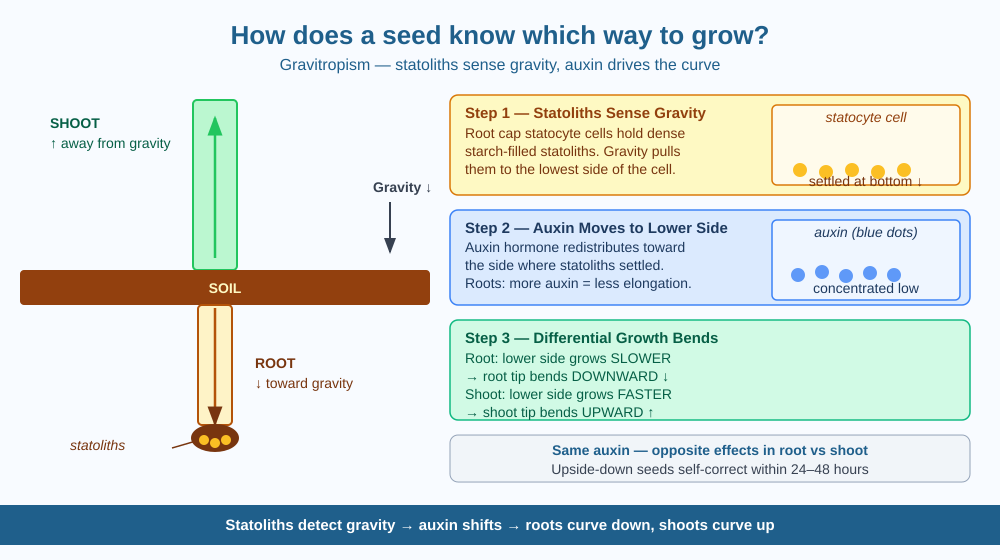

By the end of this lesson, you should be able to explain why a seed's root always grows downward and its shoot always grows upward, name the cells and chemical responsible for sensing gravity, and predict what happens to a germinating seed in zero gravity.
Bury a mango seed any way you like — upside down, sideways, or at an angle — and within a day or two the root will bend downward and the shoot will push upward. The seed has no eyes, no brain, no GPS. So how does it know which way is down?
The answer is a process called gravitropism — the ability of a plant to grow in a direction determined by gravity. Roots are positively gravitropic (they grow toward gravity) and shoots are negatively gravitropic (they grow away from it).
Step 1 — Sensing gravity with statoliths. Deep inside the root tip is a cluster of special cells called statocytes (also called columella cells). Each statocyte contains tiny, dense starch-filled bodies called statoliths — essentially tiny gravity pellets. Because they are denser than the surrounding fluid in the cell, statoliths always settle to the lowest side of the cell, no matter which direction the root is pointing. This settling is the signal that says "down is this way."
Step 2 — Auxin redistribution. When statoliths settle on one side, they trigger a cascade that causes a plant hormone called auxin (indole-3-acetic acid, or IAA) to move toward whichever side the statoliths settled on — the lower side. Auxin is produced at the growing tip of roots and shoots and normally travels straight downward, but gravitropism reroutes it laterally.
Step 3 — Differential cell growth. Here is the clever twist: auxin has opposite effects in roots and shoots. - In roots, higher auxin on the lower side inhibits cell elongation on that side. The upper side, with less auxin, elongates faster. The root curves downward. - In shoots, higher auxin on the lower side promotes cell elongation. The lower side grows faster, pushing the shoot tip upward.
The same chemical — auxin — produces opposite growth responses in roots and shoots because the two tissues have different sensitivities to it.
Think of the plant as a slow-motion robot that uses gravity as its compass:
The entire mechanism works without any nervous system — it is purely chemical, operating over hours rather than milliseconds.
The included SVG shows a labeled seedling diagram on the left (shoot growing up, root growing down, with the soil line marked) and a three-step mechanism panel on the right:

Gravity is not the only directional signal plants respond to. Shoots also respond to light (phototropism — growing toward a light source). Both responses use auxin, but in phototropism, auxin moves toward the shaded side of the shoot rather than the lower side.
Predict: If a plant were growing in a room lit from one side (light from the left) AND tilted sideways (so gravity acts to the right), the shoot would receive two auxin signals pointing in different directions. Which direction do you predict the shoot tip would bend — toward the light or toward gravity? Give a reason.
What is the main mechanism that tells a seed's root to grow downward and shoot to grow upward?
Why is knowing the mechanism of directional growth more useful than just observing that roots grow down?
If a germinating seed were grown in a rotating drum that cancelled out the effect of gravity, what would you predict?
Explain gravitropism to a Class 4 student in 60 seconds without using "auxin," "statoliths," or "gravitropism." Then explain it again using all three terms. Check: do both versions describe the same mechanism — statolith settling, hormone shift, and differential growth?
Statoliths are so light — each weighing only about a trillionth of a gram — that scientists long doubted they could exert enough force to trigger a biological signal. It turns out the plant amplifies this tiny mechanical signal through a cascade of chemical reactions, the same way your ear's hair cells amplify tiny sound vibrations into nerve impulses. Tiny physical signal → big biological response is a recurring trick in living systems.
Statoliths in root cap cells settle toward gravity → auxin shifts to that side → roots curve toward gravity, shoots curve away. Same hormone, opposite effects.